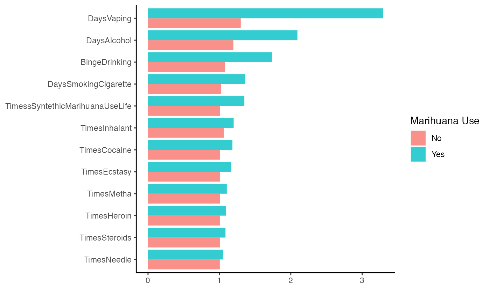
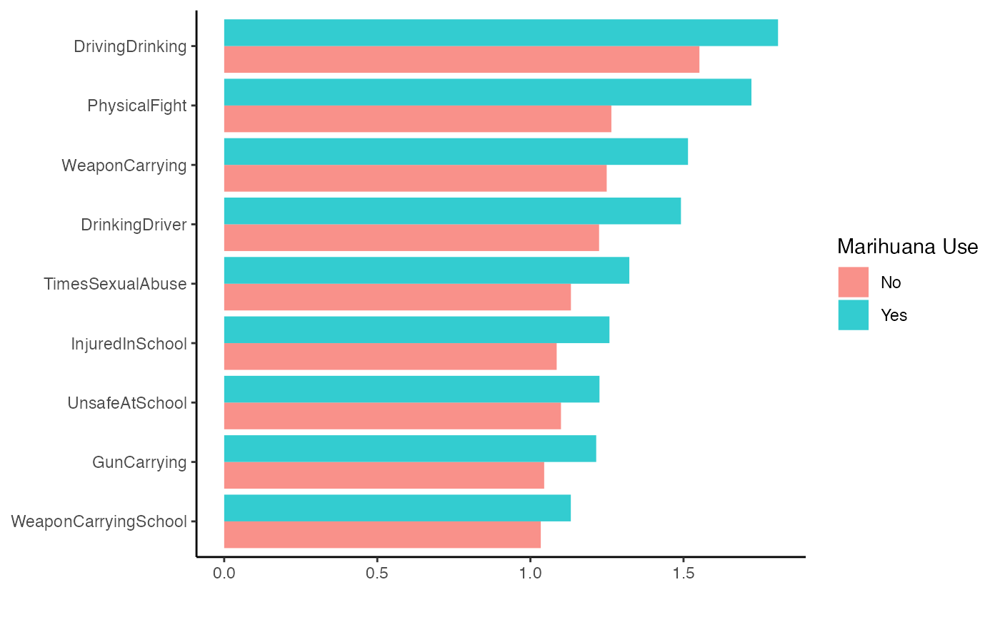

lasso.Rmd
suppressPackageStartupMessages(library(tidymodels))
suppressPackageStartupMessages(library(tidyverse))
library(MLearnYRBSS)
library(skimr)Welcome to the first vignette of our educational data package
MLearnYRBSS on supervised machine learning methods with
tidymodels. In this vignette, we aim to investigate the
research question of whether we can predict marijuana use based on
various predictors. These predictors include alcohol and other drug use,
reckless behaviors such as not wearing seatbelts or driving under the
influence, as well as variables related to sexual abuse, carrying guns
to school, bullying, and feeling unsafe while walking to school.
The dataset is quite extensive, with most of the data being complete. However, there is one variable, Seat belt use, which has a significant percentage of missing values and will be excluded from the model. On the other hand, all the other variables have a completeness rate higher than 65%. As for the outcome variable, Marijuana Use, it has a completeness rate of 85%.
| Name | riskyBehaviors |
| Number of rows | 13677 |
| Number of columns | 46 |
| _______________________ | |
| Column type frequency: | |
| character | 6 |
| factor | 6 |
| numeric | 34 |
| ________________________ | |
| Group variables | None |
Variable type: character
| skim_variable | n_missing | complete_rate | min | max | empty | n_unique | whitespace |
|---|---|---|---|---|---|---|---|
| Sex | 151 | 0.99 | 4 | 6 | 0 | 2 | 0 |
| Race | 438 | 0.97 | 5 | 25 | 0 | 8 | 0 |
| Grade | 151 | 0.99 | 1 | 2 | 0 | 4 | 0 |
| SexOrientation | 702 | 0.95 | 8 | 14 | 0 | 4 | 0 |
| SeatBealtUse | 11683 | 0.15 | 5 | 17 | 0 | 5 | 0 |
| SourceAlcohol | 3656 | 0.73 | 1 | 1 | 0 | 8 | 0 |
Variable type: factor
| skim_variable | n_missing | complete_rate | ordered | n_unique | top_counts |
|---|---|---|---|---|---|
| SexualAbuse | 2438 | 0.82 | FALSE | 2 | 0: 10368, 1: 871 |
| Bullying | 230 | 0.98 | FALSE | 2 | 0: 10744, 1: 2703 |
| CyberBullying | 192 | 0.99 | FALSE | 2 | 0: 11347, 1: 2138 |
| SmokingCigarette | 3708 | 0.73 | FALSE | 2 | 0: 7651, 1: 2318 |
| Vaping | 472 | 0.97 | FALSE | 2 | 0: 6648, 1: 6557 |
| MarihuanaUse | 2018 | 0.85 | FALSE | 2 | 0: 7440, 1: 4219 |
Variable type: numeric
| skim_variable | n_missing | complete_rate | mean | sd | p0 | p25 | p50 | p75 | p100 | hist |
|---|---|---|---|---|---|---|---|---|---|---|
| Age | 72 | 0.99 | 15.94 | 1.24 | 12 | 15 | 16 | 17 | 18 | ▁▃▆▆▇ |
| DrinkingDriver | 860 | 0.94 | 1.35 | 0.89 | 1 | 1 | 1 | 1 | 5 | ▇▁▁▁▁ |
| DrivingDrinking | 1199 | 0.91 | 1.66 | 0.67 | 1 | 1 | 2 | 2 | 6 | ▇▁▁▁▁ |
| TextingDriving | 1567 | 0.89 | 2.33 | 1.89 | 1 | 1 | 2 | 2 | 8 | ▇▁▁▁▁ |
| WeaponCarrying | 3133 | 0.77 | 1.36 | 1.03 | 1 | 1 | 1 | 1 | 5 | ▇▁▁▁▁ |
| WeaponCarryingSchool | 776 | 0.94 | 1.08 | 0.50 | 1 | 1 | 1 | 1 | 5 | ▇▁▁▁▁ |
| GunCarrying | 2818 | 0.79 | 1.12 | 0.61 | 1 | 1 | 1 | 1 | 5 | ▇▁▁▁▁ |
| UnsafeAtSchool | 76 | 0.99 | 1.17 | 0.62 | 1 | 1 | 1 | 1 | 5 | ▇▁▁▁▁ |
| InjuredInSchool | 132 | 0.99 | 1.18 | 0.80 | 1 | 1 | 1 | 1 | 8 | ▇▁▁▁▁ |
| PhysicalFight | 2906 | 0.79 | 1.47 | 1.15 | 1 | 1 | 1 | 1 | 8 | ▇▁▁▁▁ |
| SchoolPhysicalFight | 558 | 0.96 | 1.16 | 0.70 | 1 | 1 | 1 | 1 | 8 | ▇▁▁▁▁ |
| TimesSexualAbuse | 3439 | 0.75 | 1.22 | 0.71 | 1 | 1 | 1 | 1 | 5 | ▇▁▁▁▁ |
| SexualAbuseByPartner | 3324 | 0.76 | 1.77 | 0.75 | 1 | 1 | 2 | 2 | 6 | ▇▁▁▁▁ |
| AgeFirstCig | 1375 | 0.90 | 1.86 | 1.73 | 1 | 1 | 1 | 1 | 7 | ▇▁▁▁▁ |
| DaysSmokingCigarette | 1360 | 0.90 | 1.16 | 0.78 | 1 | 1 | 1 | 1 | 7 | ▇▁▁▁▁ |
| CigPerDay | 2783 | 0.80 | 1.14 | 0.67 | 1 | 1 | 1 | 1 | 7 | ▇▁▁▁▁ |
| DaysVaping | 910 | 0.93 | 2.04 | 1.87 | 1 | 1 | 1 | 2 | 7 | ▇▁▁▁▁ |
| DaysSmokelessTobacco | 886 | 0.94 | 1.12 | 0.68 | 1 | 1 | 1 | 1 | 7 | ▇▁▁▁▁ |
| DaysSmokingCigar | 872 | 0.94 | 1.15 | 0.73 | 1 | 1 | 1 | 1 | 7 | ▇▁▁▁▁ |
| AgeFirstAlcohol | 491 | 0.96 | 3.22 | 2.21 | 1 | 1 | 3 | 5 | 7 | ▇▁▁▃▃ |
| DaysAlcohol | 1066 | 0.92 | 1.53 | 1.04 | 1 | 1 | 1 | 2 | 7 | ▇▁▁▁▁ |
| BingeDrinking | 1657 | 0.88 | 1.32 | 0.94 | 1 | 1 | 1 | 1 | 7 | ▇▁▁▁▁ |
| LargestNumberOfDrinks | 4782 | 0.65 | 1.83 | 1.78 | 1 | 1 | 1 | 2 | 8 | ▇▁▁▁▁ |
| TimesMarihuanaUseLife | 2018 | 0.85 | 2.19 | 1.95 | 1 | 1 | 1 | 3 | 7 | ▇▁▁▁▁ |
| AgeFirstMarihuana | 431 | 0.97 | 2.62 | 2.19 | 1 | 1 | 1 | 5 | 7 | ▇▁▁▂▂ |
| TimesMarihuanaUse30Days | 372 | 0.97 | 1.55 | 1.25 | 1 | 1 | 1 | 1 | 6 | ▇▁▁▁▁ |
| TimessSyntethicMarihuanaUseLife | 1279 | 0.91 | 1.16 | 0.69 | 1 | 1 | 1 | 1 | 6 | ▇▁▁▁▁ |
| TimesCocaine | 1505 | 0.89 | 1.10 | 0.57 | 1 | 1 | 1 | 1 | 6 | ▇▁▁▁▁ |
| TimesInhalant | 3022 | 0.78 | 1.14 | 0.62 | 1 | 1 | 1 | 1 | 6 | ▇▁▁▁▁ |
| TimesHeroin | 966 | 0.93 | 1.07 | 0.49 | 1 | 1 | 1 | 1 | 6 | ▇▁▁▁▁ |
| TimesMetha | 987 | 0.93 | 1.07 | 0.50 | 1 | 1 | 1 | 1 | 6 | ▇▁▁▁▁ |
| TimesEcstasy | 1221 | 0.91 | 1.10 | 0.54 | 1 | 1 | 1 | 1 | 6 | ▇▁▁▁▁ |
| TimesSteroids | 4628 | 0.66 | 1.05 | 0.40 | 1 | 1 | 1 | 1 | 6 | ▇▁▁▁▁ |
| TimesNeedle | 2723 | 0.80 | 1.03 | 0.21 | 1 | 1 | 1 | 1 | 3 | ▇▁▁▁▁ |
Let’s examine the two groups within the Marijuana Use variable. Specifically, we observe that the number of students who have not smoked Marijuana is nearly double that of those who have.
riskyBehaviors |> count(MarihuanaUse)
#> # A tibble: 3 × 2
#> MarihuanaUse n
#> <fct> <int>
#> 1 0 7440
#> 2 1 4219
#> 3 NA 2018Let’s explore the relationship between Marijuana use and other forms of substance use. It’s apparent that Marijuana use is associated with the use of vaping, alcohol, cigarettes, and synthetic Marijuana.
riskyBehaviors |>
filter(!is.na(MarihuanaUse)) |>
mutate(MarihuanaUse = case_when(
MarihuanaUse == 0 ~ "No",
MarihuanaUse == 1 ~ "Yes"
)) |>
group_by(MarihuanaUse) |>
summarise(across(c(
DaysSmokingCigarette, DaysAlcohol, TimesInhalant,
TimessSyntethicMarihuanaUseLife, TimesCocaine,
TimesHeroin, TimesMetha, TimesEcstasy, TimesSteroids,
TimesNeedle, BingeDrinking, DaysVaping
), mean, na.rm = TRUE)) |>
pivot_longer(-MarihuanaUse) |>
ggplot(aes(value, fct_reorder(name, value), fill = MarihuanaUse)) +
geom_col(alpha = 0.8, position = "dodge") +
scale_x_continuous() +
labs(x = "", fill = "Marihuana Use", y = NULL, fill = NULL) +
theme_classic()
#> Warning: There was 1 warning in `summarise()`.
#> ℹ In argument: `across(...)`.
#> ℹ In group 1: `MarihuanaUse = "No"`.
#> Caused by warning:
#> ! The `...` argument of `across()` is deprecated as of dplyr 1.1.0.
#> Supply arguments directly to `.fns` through an anonymous function instead.
#>
#> # Previously
#> across(a:b, mean, na.rm = TRUE)
#>
#> # Now
#> across(a:b, \(x) mean(x, na.rm = TRUE))
Let’s now examine the relationship between Marijuana use and other behaviors. It appears that Marijuana use is correlated with risky behaviors such as driving under the influence, physical altercations, and carrying weapons, with these behaviors being more prevalent among adolescents who have consumed Marijuana.
riskyBehaviors |>
filter(!is.na(MarihuanaUse)) |>
mutate(MarihuanaUse = case_when(
MarihuanaUse == 0 ~ "No",
MarihuanaUse == 1 ~ "Yes"
)) |>
group_by(MarihuanaUse) |>
summarise(across(c(
DrinkingDriver, DrivingDrinking, WeaponCarrying, WeaponCarryingSchool, GunCarrying, UnsafeAtSchool, InjuredInSchool,
PhysicalFight, TimesSexualAbuse
), mean, na.rm = TRUE)) |>
pivot_longer(-MarihuanaUse) |>
ggplot(aes(value, fct_reorder(name, value), fill = MarihuanaUse)) +
geom_col(alpha = 0.8, position = "dodge") +
scale_x_continuous() +
labs(x = "", fill = "Marihuana Use", y = NULL, fill = NULL) +
theme_classic()
We are going to start by splitting our data into training and testing sets, and creating cross-validation samples
set.seed(568)
risky_split <- riskyBehaviors |>
filter(!is.na(MarihuanaUse)) |>
select(-SeatBealtUse ) |>
select(MarihuanaUse, everything()) %>%
initial_split(strata = MarihuanaUse)
risky_train <- training(risky_split)
risky_test <- testing(risky_split)
set.seed(123)
risky_folds <- vfold_cv(risky_train)
risky_folds
#> # 10-fold cross-validation
#> # A tibble: 10 × 2
#> splits id
#> <list> <chr>
#> 1 <split [7869/875]> Fold01
#> 2 <split [7869/875]> Fold02
#> 3 <split [7869/875]> Fold03
#> 4 <split [7869/875]> Fold04
#> 5 <split [7870/874]> Fold05
#> 6 <split [7870/874]> Fold06
#> 7 <split [7870/874]> Fold07
#> 8 <split [7870/874]> Fold08
#> 9 <split [7870/874]> Fold09
#> 10 <split [7870/874]> Fold10
risky_rec <-
recipe(MarihuanaUse ~ ., data = risky_train) |>
step_select(-AgeFirstMarihuana, -TimesMarihuanaUse30Days,
-TimesMarihuanaUseLife, -TimessSyntethicMarihuanaUseLife ) |>
step_impute_mode(all_nominal_predictors()) |>
step_impute_mean(all_numeric_predictors()) |>
step_normalize(all_numeric_predictors()) |>
step_dummy(all_nominal_predictors())
bake(prep(risky_rec), new_data = risky_train) |> glimpse()
#> Rows: 8,744
#> Columns: 57
#> $ Age <dbl> -0.76564719, -0.76564719, 0.04851054, 0…
#> $ DrinkingDriver <dbl> -0.3935060, -0.3935060, -0.3935060, -0.…
#> $ DrivingDrinking <dbl> -1.019390e+00, -1.019390e+00, 5.600123e…
#> $ TextingDriving <dbl> -7.363573e-01, -7.363573e-01, 3.207552e…
#> $ WeaponCarrying <dbl> -0.4006116, -0.4006116, -0.4006116, 2.9…
#> $ WeaponCarryingSchool <dbl> -0.1509654, -0.1509654, -0.1509654, -0.…
#> $ GunCarrying <dbl> -0.1969928, -0.1969928, -0.1969928, -0.…
#> $ UnsafeAtSchool <dbl> 3.3680753, -0.2576077, -0.2576077, -0.2…
#> $ InjuredInSchool <dbl> -0.2038708, 2.5763013, -0.2038708, -0.2…
#> $ PhysicalFight <dbl> -0.4447523, -0.4447523, 1.6233387, -0.4…
#> $ SchoolPhysicalFight <dbl> -0.2275055, -0.2275055, -0.2275055, -0.…
#> $ TimesSexualAbuse <dbl> -0.348807, -0.348807, -0.348807, -0.348…
#> $ SexualAbuseByPartner <dbl> -1.1983086, 0.3695426, 0.3695426, 0.369…
#> $ AgeFirstCig <dbl> -0.5151418, -0.5151418, -0.5151418, -0.…
#> $ DaysSmokingCigarette <dbl> -0.1954677, -0.1954677, -0.1954677, -0.…
#> $ CigPerDay <dbl> -2.361516e-01, -2.361516e-01, -2.361516…
#> $ DaysVaping <dbl> -5.623297e-01, -5.623297e-01, -5.623297…
#> $ DaysSmokelessTobacco <dbl> -0.1606342, -0.1606342, -0.1606342, -0.…
#> $ DaysSmokingCigar <dbl> -0.1894035, -0.1894035, -0.1894035, -0.…
#> $ AgeFirstAlcohol <dbl> 1.26962994, -1.00497919, 0.81470811, -1…
#> $ DaysAlcohol <dbl> 4.960707e-01, -5.196990e-01, 4.960707e-…
#> $ BingeDrinking <dbl> -0.3544101, -0.3544101, -0.3544101, -0.…
#> $ LargestNumberOfDrinks <dbl> 1.065021e-01, -5.399067e-01, 1.065021e-…
#> $ TimesCocaine <dbl> -0.1565961, -0.1565961, -0.1565961, -0.…
#> $ TimesInhalant <dbl> 3.8715643, -0.2350468, -0.2350468, -0.2…
#> $ TimesHeroin <dbl> -0.1039038, -0.1039038, -0.1039038, -0.…
#> $ TimesMetha <dbl> -0.1135775, -0.1135775, -0.1135775, -0.…
#> $ TimesEcstasy <dbl> -0.1522691, 4.3317744, -0.1522691, -0.1…
#> $ TimesSteroids <dbl> -0.1188518, -0.1188518, -0.1188518, -0.…
#> $ TimesNeedle <dbl> -0.1220847, -0.1220847, -0.1220847, -0.…
#> $ MarihuanaUse <fct> 0, 0, 0, 0, 0, 0, 0, 0, 0, 0, 0, 0, 0, …
#> $ Sex_Male <dbl> 0, 1, 1, 1, 1, 0, 1, 0, 1, 1, 1, 1, 1, …
#> $ Race_Asian <dbl> 0, 0, 0, 0, 0, 0, 0, 0, 0, 0, 0, 0, 0, …
#> $ Race_Black.or.African.American <dbl> 0, 0, 0, 0, 0, 0, 0, 0, 0, 0, 0, 0, 0, …
#> $ Race_Hispanic.Latino <dbl> 0, 0, 0, 0, 0, 0, 0, 0, 0, 0, 0, 1, 0, …
#> $ Race_Multiple.Hispanic <dbl> 0, 0, 1, 0, 0, 1, 1, 0, 0, 1, 0, 0, 1, …
#> $ Race_Multiple.Non.Hispanic <dbl> 0, 0, 0, 0, 0, 0, 0, 0, 0, 0, 0, 0, 0, …
#> $ Race_Native.Hawaiian.Other.PI <dbl> 0, 0, 0, 0, 0, 0, 0, 0, 0, 0, 0, 0, 0, …
#> $ Race_White <dbl> 1, 1, 0, 1, 1, 0, 0, 1, 1, 0, 1, 0, 0, …
#> $ Grade_X11 <dbl> 0, 0, 0, 0, 1, 0, 0, 0, 0, 1, 1, 0, 0, …
#> $ Grade_X12 <dbl> 0, 0, 0, 0, 0, 0, 0, 0, 0, 0, 0, 1, 0, …
#> $ Grade_X9 <dbl> 0, 0, 0, 0, 0, 0, 0, 0, 0, 0, 0, 0, 1, …
#> $ SexOrientation_Gay.or.Lesbian <dbl> 0, 0, 0, 0, 0, 0, 0, 0, 0, 0, 0, 0, 0, …
#> $ SexOrientation_Heterosexual <dbl> 0, 1, 1, 1, 1, 1, 1, 0, 1, 1, 1, 1, 1, …
#> $ SexOrientation_Not.sure <dbl> 0, 0, 0, 0, 0, 0, 0, 0, 0, 0, 0, 0, 0, …
#> $ SexualAbuse_X1 <dbl> 0, 0, 0, 0, 0, 0, 1, 0, 0, 0, 0, 0, 0, …
#> $ Bullying_X1 <dbl> 1, 0, 0, 0, 1, 0, 0, 0, 1, 0, 0, 0, 0, …
#> $ CyberBullying_X1 <dbl> 0, 0, 0, 0, 0, 0, 0, 0, 1, 0, 0, 0, 0, …
#> $ SmokingCigarette_X1 <dbl> 0, 0, 0, 0, 1, 0, 0, 0, 0, 1, 0, 0, 0, …
#> $ Vaping_X1 <dbl> 0, 1, 0, 0, 1, 0, 0, 1, 0, 1, 0, 0, 0, …
#> $ SourceAlcohol_X2 <dbl> 0, 0, 0, 0, 0, 0, 0, 0, 0, 0, 0, 0, 0, …
#> $ SourceAlcohol_X3 <dbl> 0, 0, 0, 0, 0, 0, 0, 0, 0, 0, 0, 0, 0, …
#> $ SourceAlcohol_X4 <dbl> 0, 0, 0, 0, 0, 0, 0, 0, 0, 0, 0, 0, 0, …
#> $ SourceAlcohol_X5 <dbl> 0, 0, 0, 0, 0, 0, 0, 0, 0, 0, 0, 0, 0, …
#> $ SourceAlcohol_X6 <dbl> 1, 0, 0, 0, 0, 0, 1, 0, 0, 0, 0, 0, 0, …
#> $ SourceAlcohol_X7 <dbl> 0, 0, 0, 0, 0, 0, 0, 0, 0, 0, 0, 0, 0, …
#> $ SourceAlcohol_X8 <dbl> 0, 0, 1, 0, 0, 0, 0, 0, 0, 0, 0, 0, 0, …